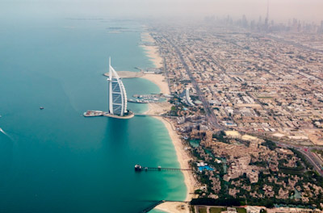
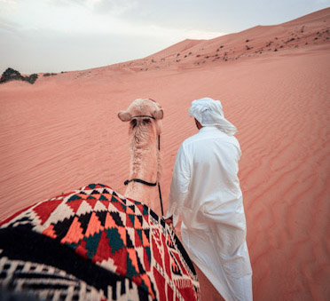
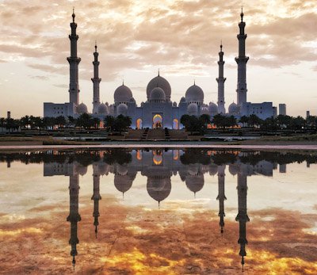

En quelques années, Dubaï est devenue incontournable. Cette ville du Moyen-Orient,
où se mêlent modernité, luxe et tradition, symbolise le nouveau rêve arabe.
En 150 ans à peine, le petit village bédouin de Dubaï
s'est métamorphosé en cité ultramoderne.
Comment imaginer qu'en 1960 la ville ne bénéficiait
pas encore de l'électricité ? La découverte de l'or noir
en 1966 a permis son développement fulgurant. Dès les années 70,
les immeubles en béton ont commencé à remplacer les tentes bédouines,
mais ce n'est qu'au début des années 2000 que cet État du désert est
devenu le terrain de jeu des architectes internationaux à l'imagination débridée.

Sunset Beach
La Sunset Beach, aussi connue sous le nom de plage d'Umm Suqeim,
est le lieu idéal pour se relaxer au soleil en
profitant du sable fin et des vues offertes sur le Burj Al Arab.
C'est un des endroits les plus tranquilles du littoral et
une plage magnifique où faire son jogging matinal ou se
balader en admirant le soleil se coucher sur le golfe Persique.
Vous pourrez y faire une sieste ou lire votre livre dans
un cadre des plus sereins, à moins que vous ne préféreriez
courir le long de la piste ou vous baigner dans ses eaux bleues.

Desert
Le désert constitue une part importante du patrimoine culturel et
de l'héritage local de Dubai et des Emirats Arabes Unis. Déscendants des bédouins,
les émiratis modernes sont encore fortement attachés au désert, bien qu'ils n'y vivent plus.
La ville de Dubai étant intégralement construite dans le désert,
il est en fait possible de dire qu'où vous vous situez à Dubai vous êtes en réalité déjà dans le désert.
La ville ayant toutefois été aménagée, il n'y reste plus d'espace désertique avec des dunes et
il faudra prendre la voiture et
rouler quelques kilomètres pour sortir de Dubai et voir le véritable désert.

Mosquée:
Réflexions majestueuses de la Grande Mosquée Shaik Zayed et
ciel doré ardent capturé de l'Oasis de la dignité, Abu Dhabi,
Emirats Arabes Unis. L'Oasis de la dignité a encore de l'eau en son centre,
ce qui vous donne de splendides reflets de la mosquée le matin et le soir.